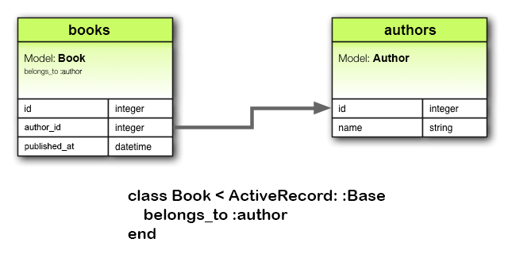
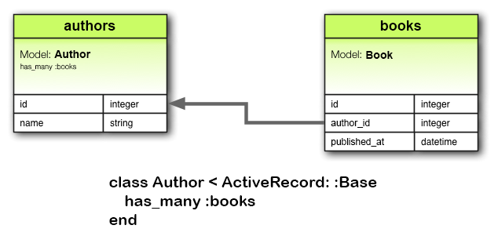

DO NOT READ THIS FILE ON GITHUB, GUIDES ARE PUBLISHED ON http://guides.rubyonrails.org.
Active Record Associations
This guide covers the association features of Active Record.
After reading this guide, you will know:
- How to declare associations between Active Record models.
- How to understand the various types of Active Record associations.
- How to use the methods added to your models by creating associations.
Why Associations?
In Rails, an association is a connection between two Active Record models. Why do we need associations between models? Because they make common operations simpler and easier in your code. For example, consider a simple Rails application that includes a model for authors and a model for books. Each author can have many books. Without associations, the model declarations would look like this:
class Author < ApplicationRecord
end
class Book < ApplicationRecord
end
Now, suppose we wanted to add a new book for an existing author. We'd need to do something like this:
@book = Book.create(published_at: Time.now, author_id: @author.id)
Or consider deleting an author, and ensuring that all of its books get deleted as well:
@books = Book.where(author_id: @author.id)
@books.each do |book|
book.destroy
end
@author.destroy
With Active Record associations, we can streamline these - and other - operations by declaratively telling Rails that there is a connection between the two models. Here's the revised code for setting up authors and books:
class Author < ApplicationRecord
has_many :books, dependent: :destroy
end
class Book < ApplicationRecord
belongs_to :author
end
With this change, creating a new book for a particular author is easier:
@book = @author.books.create(published_at: Time.now)
Deleting an author and all of its books is much easier:
@author.destroy
To learn more about the different types of associations, read the next section of this guide. That's followed by some tips and tricks for working with associations, and then by a complete reference to the methods and options for associations in Rails.
The Types of Associations
Rails supports six types of associations:
belongs_tohas_onehas_manyhas_many :throughhas_one :throughhas_and_belongs_to_many
Associations are implemented using macro-style calls, so that you can declaratively add features to your models. For example, by declaring that one model belongs_to another, you instruct Rails to maintain Primary Key-Foreign Key information between instances of the two models, and you also get a number of utility methods added to your model.
In the remainder of this guide, you'll learn how to declare and use the various forms of associations. But first, a quick introduction to the situations where each association type is appropriate.
The belongs_to Association
A belongs_to association sets up a one-to-one connection with another model, such that each instance of the declaring model "belongs to" one instance of the other model. For example, if your application includes authors and books, and each book can be assigned to exactly one author, you'd declare the book model this way:
class Book < ApplicationRecord
belongs_to :author
end

NOTE: belongs_to associations must use the singular term. If you used the pluralized form in the above example for the author association in the Book model, you would be told that there was an "uninitialized constant Book::Authors". This is because Rails automatically infers the class name from the association name. If the association name is wrongly pluralized, then the inferred class will be wrongly pluralized too.
The corresponding migration might look like this:
class CreateBooks < ActiveRecord::Migration[5.0]
def change
create_table :authors do |t|
t.string :name
t.
end
create_table :books do |t|
t.belongs_to :author, index: true
t.datetime :published_at
t.
end
end
end
The has_one Association
A has_one association also sets up a one-to-one connection with another model, but with somewhat different semantics (and consequences). This association indicates that each instance of a model contains or possesses one instance of another model. For example, if each supplier in your application has only one account, you'd declare the supplier model like this:
class Supplier < ApplicationRecord
has_one :account
end

The corresponding migration might look like this:
class CreateSuppliers < ActiveRecord::Migration[5.0]
def change
create_table :suppliers do |t|
t.string :name
t.
end
create_table :accounts do |t|
t.belongs_to :supplier, index: true
t.string :account_number
t.
end
end
end
Depending on the use case, you might also need to create a unique index and/or a foreign key constraint on the supplier column for the accounts table. In this case, the column definition might look like this:
create_table :accounts do |t|
t.belongs_to :supplier, index: true, unique: true, foreign_key: true
# ...
end
The has_many Association
A has_many association indicates a one-to-many connection with another model. You'll often find this association on the "other side" of a belongs_to association. This association indicates that each instance of the model has zero or more instances of another model. For example, in an application containing authors and books, the author model could be declared like this:
class Author < ApplicationRecord
has_many :books
end
NOTE: The name of the other model is pluralized when declaring a has_many association.

The corresponding migration might look like this:
class CreateAuthors < ActiveRecord::Migration[5.0]
def change
create_table :authors do |t|
t.string :name
t.
end
create_table :books do |t|
t.belongs_to :author, index: true
t.datetime :published_at
t.
end
end
end
The has_many :through Association
A has_many :through association is often used to set up a many-to-many connection with another model. This association indicates that the declaring model can be matched with zero or more instances of another model by proceeding through a third model. For example, consider a medical practice where patients make appointments to see physicians. The relevant association declarations could look like this:
class Physician < ApplicationRecord
has_many :appointments
has_many :patients, through: :appointments
end
class Appointment < ApplicationRecord
belongs_to :physician
belongs_to :patient
end
class Patient < ApplicationRecord
has_many :appointments
has_many :physicians, through: :appointments
end

The corresponding migration might look like this:
class CreateAppointments < ActiveRecord::Migration[5.0]
def change
create_table :physicians do |t|
t.string :name
t.
end
create_table :patients do |t|
t.string :name
t.
end
create_table :appointments do |t|
t.belongs_to :physician, index: true
t.belongs_to :patient, index: true
t.datetime :appointment_date
t.
end
end
end
The collection of join models can be managed via the has_many association methods.
For example, if you assign:
physician.patients = patients
Then new join models are automatically created for the newly associated objects. If some that existed previously are now missing, then their join rows are automatically deleted.
WARNING: Automatic deletion of join models is direct, no destroy callbacks are triggered.
The has_many :through association is also useful for setting up "shortcuts" through nested has_many associations. For example, if a document has many sections, and a section has many paragraphs, you may sometimes want to get a simple collection of all paragraphs in the document. You could set that up this way:
class Document < ApplicationRecord
has_many :sections
has_many :paragraphs, through: :sections
end
class Section < ApplicationRecord
belongs_to :document
has_many :paragraphs
end
class Paragraph < ApplicationRecord
belongs_to :section
end
With through: :sections specified, Rails will now understand:
@document.paragraphs
The has_one :through Association
A has_one :through association sets up a one-to-one connection with another model. This association indicates
that the declaring model can be matched with one instance of another model by proceeding through a third model.
For example, if each supplier has one account, and each account is associated with one account history, then the
supplier model could look like this:
class Supplier < ApplicationRecord
has_one :account
has_one :account_history, through: :account
end
class Account < ApplicationRecord
belongs_to :supplier
has_one :account_history
end
class AccountHistory < ApplicationRecord
belongs_to :account
end

The corresponding migration might look like this:
class CreateAccountHistories < ActiveRecord::Migration[5.0]
def change
create_table :suppliers do |t|
t.string :name
t.
end
create_table :accounts do |t|
t.belongs_to :supplier, index: true
t.string :account_number
t.
end
create_table :account_histories do |t|
t.belongs_to :account, index: true
t.integer :credit_rating
t.
end
end
end
The has_and_belongs_to_many Association
A has_and_belongs_to_many association creates a direct many-to-many connection with another model, with no intervening model. For example, if your application includes assemblies and parts, with each assembly having many parts and each part appearing in many assemblies, you could declare the models this way:
class Assembly < ApplicationRecord
has_and_belongs_to_many :parts
end
class Part < ApplicationRecord
has_and_belongs_to_many :assemblies
end

The corresponding migration might look like this:
class CreateAssembliesAndParts < ActiveRecord::Migration[5.0]
def change
create_table :assemblies do |t|
t.string :name
t.
end
create_table :parts do |t|
t.string :part_number
t.
end
create_table :assemblies_parts, id: false do |t|
t.belongs_to :assembly, index: true
t.belongs_to :part, index: true
end
end
end
Choosing Between belongs_to and has_one
If you want to set up a one-to-one relationship between two models, you'll need to add belongs_to to one, and has_one to the other. How do you know which is which?
The distinction is in where you place the foreign key (it goes on the table for the class declaring the belongs_to association), but you should give some thought to the actual meaning of the data as well. The has_one relationship says that one of something is yours - that is, that something points back to you. For example, it makes more sense to say that a supplier owns an account than that an account owns a supplier. This suggests that the correct relationships are like this:
class Supplier < ApplicationRecord
has_one :account
end
class Account < ApplicationRecord
belongs_to :supplier
end
The corresponding migration might look like this:
class CreateSuppliers < ActiveRecord::Migration[5.0]
def change
create_table :suppliers do |t|
t.string :name
t.
end
create_table :accounts do |t|
t.integer :supplier_id
t.string :account_number
t.
end
add_index :accounts, :supplier_id
end
end
NOTE: Using t.integer :supplier_id makes the foreign key naming obvious and explicit. In current versions of Rails, you can abstract away this implementation detail by using t.references :supplier instead.
Choosing Between has_many :through and has_and_belongs_to_many
Rails offers two different ways to declare a many-to-many relationship between models. The simpler way is to use has_and_belongs_to_many, which allows you to make the association directly:
class Assembly < ApplicationRecord
has_and_belongs_to_many :parts
end
class Part < ApplicationRecord
has_and_belongs_to_many :assemblies
end
The second way to declare a many-to-many relationship is to use has_many :through. This makes the association indirectly, through a join model:
class Assembly < ApplicationRecord
has_many :manifests
has_many :parts, through: :manifests
end
class Manifest < ApplicationRecord
belongs_to :assembly
belongs_to :part
end
class Part < ApplicationRecord
has_many :manifests
has_many :assemblies, through: :manifests
end
The simplest rule of thumb is that you should set up a has_many :through relationship if you need to work with the relationship model as an independent entity. If you don't need to do anything with the relationship model, it may be simpler to set up a has_and_belongs_to_many relationship (though you'll need to remember to create the joining table in the database).
You should use has_many :through if you need validations, callbacks or extra attributes on the join model.
Polymorphic Associations
A slightly more advanced twist on associations is the polymorphic association. With polymorphic associations, a model can belong to more than one other model, on a single association. For example, you might have a picture model that belongs to either an employee model or a product model. Here's how this could be declared:
class Picture < ApplicationRecord
belongs_to :imageable, polymorphic: true
end
class Employee < ApplicationRecord
has_many :pictures, as: :imageable
end
class Product < ApplicationRecord
has_many :pictures, as: :imageable
end
You can think of a polymorphic belongs_to declaration as setting up an interface that any other model can use. From an instance of the Employee model, you can retrieve a collection of pictures: @employee.pictures.
Similarly, you can retrieve @product.pictures.
If you have an instance of the Picture model, you can get to its parent via @picture.imageable. To make this work, you need to declare both a foreign key column and a type column in the model that declares the polymorphic interface:
class CreatePictures < ActiveRecord::Migration[5.0]
def change
create_table :pictures do |t|
t.string :name
t.integer :imageable_id
t.string :imageable_type
t.
end
add_index :pictures, [:imageable_type, :imageable_id]
end
end
This migration can be simplified by using the t.references form:
class CreatePictures < ActiveRecord::Migration[5.0]
def change
create_table :pictures do |t|
t.string :name
t.references :imageable, polymorphic: true, index: true
t.
end
end
end

Self Joins
In designing a data model, you will sometimes find a model that should have a relation to itself. For example, you may want to store all employees in a single database model, but be able to trace relationships such as between manager and subordinates. This situation can be modeled with self-joining associations:
class Employee < ApplicationRecord
has_many :subordinates, class_name: "Employee",
foreign_key: "manager_id"
belongs_to :manager, class_name: "Employee"
end
With this setup, you can retrieve @employee.subordinates and @employee.manager.
In your migrations/schema, you will add a references column to the model itself.
class CreateEmployees < ActiveRecord::Migration[5.0]
def change
create_table :employees do |t|
t.references :manager, index: true
t.
end
end
end
Tips, Tricks, and Warnings
Here are a few things you should know to make efficient use of Active Record associations in your Rails applications:
- Controlling caching
- Avoiding name collisions
- Updating the schema
- Controlling association scope
- Bi-directional associations
Controlling Caching
All of the association methods are built around caching, which keeps the result of the most recent query available for further operations. The cache is even shared across methods. For example:
.books # retrieves books from the database
.books.size # uses the cached copy of books
.books.empty? # uses the cached copy of books
But what if you want to reload the cache, because data might have been changed by some other part of the application? Just call reload on the association:
.books # retrieves books from the database
.books.size # uses the cached copy of books
.books.reload.empty? # discards the cached copy of books
# and goes back to the database
Avoiding Name Collisions
You are not free to use just any name for your associations. Because creating an association adds a method with that name to the model, it is a bad idea to give an association a name that is already used for an instance method of ActiveRecord::Base. The association method would override the base method and break things. For instance, attributes or connection are bad names for associations.
Updating the Schema
Associations are extremely useful, but they are not magic. You are responsible for maintaining your database schema to match your associations. In practice, this means two things, depending on what sort of associations you are creating. For belongs_to associations you need to create foreign keys, and for has_and_belongs_to_many associations you need to create the appropriate join table.
Creating Foreign Keys for belongs_to Associations
When you declare a belongs_to association, you need to create foreign keys as appropriate. For example, consider this model:
class Book < ApplicationRecord
belongs_to :author
end
This declaration needs to be backed up by the proper foreign key declaration on the books table:
class CreateBooks < ActiveRecord::Migration[5.0]
def change
create_table :books do |t|
t.datetime :published_at
t.string :book_number
t.integer :author_id
end
add_index :books, :author_id
end
end
If you create an association some time after you build the underlying model, you need to remember to create an add_column migration to provide the necessary foreign key.
Creating Join Tables for has_and_belongs_to_many Associations
If you create a has_and_belongs_to_many association, you need to explicitly create the joining table. Unless the name of the join table is explicitly specified by using the :join_table option, Active Record creates the name by using the lexical book of the class names. So a join between author and book models will give the default join table name of "authors_books" because "a" outranks "b" in lexical ordering.
WARNING: The precedence between model names is calculated using the <=> operator for String. This means that if the strings are of different lengths, and the strings are equal when compared up to the shortest length, then the longer string is considered of higher lexical precedence than the shorter one. For example, one would expect the tables "paper_boxes" and "papers" to generate a join table name of "papers_paper_boxes" because of the length of the name "paper_boxes", but it in fact generates a join table name of "paper_boxes_papers" (because the underscore '_' is lexicographically less than 's' in common encodings).
Whatever the name, you must manually generate the join table with an appropriate migration. For example, consider these associations:
class Assembly < ApplicationRecord
has_and_belongs_to_many :parts
end
class Part < ApplicationRecord
has_and_belongs_to_many :assemblies
end
These need to be backed up by a migration to create the assemblies_parts table. This table should be created without a primary key:
class CreateAssembliesPartsJoinTable < ActiveRecord::Migration[5.0]
def change
create_table :assemblies_parts, id: false do |t|
t.integer :assembly_id
t.integer :part_id
end
add_index :assemblies_parts, :assembly_id
add_index :assemblies_parts, :part_id
end
end
We pass id: false to create_table because that table does not represent a model. That's required for the association to work properly. If you observe any strange behavior in a has_and_belongs_to_many association like mangled model IDs, or exceptions about conflicting IDs, chances are you forgot that bit.
You can also use the method create_join_table
class CreateAssembliesPartsJoinTable < ActiveRecord::Migration[5.0]
def change
create_join_table :assemblies, :parts do |t|
t.index :assembly_id
t.index :part_id
end
end
end
Controlling Association Scope
By default, associations look for objects only within the current module's scope. This can be important when you declare Active Record models within a module. For example:
module MyApplication
module Business
class Supplier < ApplicationRecord
has_one :account
end
class Account < ApplicationRecord
belongs_to :supplier
end
end
end
This will work fine, because both the Supplier and the Account class are defined within the same scope. But the following will not work, because Supplier and Account are defined in different scopes:
module MyApplication
module Business
class Supplier < ApplicationRecord
has_one :account
end
end
module Billing
class Account < ApplicationRecord
belongs_to :supplier
end
end
end
To associate a model with a model in a different namespace, you must specify the complete class name in your association declaration:
module MyApplication
module Business
class Supplier < ApplicationRecord
has_one :account,
class_name: "MyApplication::Billing::Account"
end
end
module Billing
class Account < ApplicationRecord
belongs_to :supplier,
class_name: "MyApplication::Business::Supplier"
end
end
end
Bi-directional Associations
It's normal for associations to work in two directions, requiring declaration on two different models:
class Author < ApplicationRecord
has_many :books
end
class Book < ApplicationRecord
belongs_to :author
end
By default, Active Record doesn't know about the connection between these associations. This can lead to two copies of an object getting out of sync:
a = Author.first
b = a.books.first
a.first_name == b..first_name # => true
a.first_name = 'Manny'
a.first_name == b..first_name # => false
This happens because a and b.author are two different in-memory representations of the same data, and neither one is automatically refreshed from changes to the other. Active Record provides the :inverse_of option so that you can inform it of these relations:
class Author < ApplicationRecord
has_many :books, inverse_of: :author
end
class Book < ApplicationRecord
belongs_to :author, inverse_of: :books
end
With these changes, Active Record will only load one copy of the author object, preventing inconsistencies and making your application more efficient:
a = Author.first
b = a.books.first
a.first_name == b..first_name # => true
a.first_name = 'Manny'
a.first_name == b..first_name # => true
There are a few limitations to inverse_of support:
- They do not work with
:throughassociations. - They do not work with
:polymorphicassociations. - They do not work with
:asassociations. - For
belongs_toassociations,has_manyinverse associations are ignored.
Every association will attempt to automatically find the inverse association
and set the :inverse_of option heuristically (based on the association name).
Most associations with standard names will be supported. However, associations
that contain the following options will not have their inverses set
automatically:
:conditions:through:polymorphic:foreign_key
Detailed Association Reference
The following sections give the details of each type of association, including the methods that they add and the options that you can use when declaring an association.
belongs_to Association Reference
The belongs_to association creates a one-to-one match with another model. In database terms, this association says that this class contains the foreign key. If the other class contains the foreign key, then you should use has_one instead.
Methods Added by belongs_to
When you declare a belongs_to association, the declaring class automatically gains five methods related to the association:
associationassociation=(associate)build_association(attributes = {})create_association(attributes = {})create_association!(attributes = {})
In all of these methods, association is replaced with the symbol passed as the first argument to belongs_to. For example, given the declaration:
class Book < ApplicationRecord
belongs_to :author
end
Each instance of the Book model will have these methods:
=
NOTE: When initializing a new has_one or belongs_to association you must use the build_ prefix to build the association, rather than the association.build method that would be used for has_many or has_and_belongs_to_many associations. To create one, use the create_ prefix.
association
The association method returns the associated object, if any. If no associated object is found, it returns nil.
@author = @book.
If the associated object has already been retrieved from the database for this object, the cached version will be returned. To override this behavior (and force a database read), call #reload on the parent object.
@author = @book.reload.
association=(associate)
The association= method assigns an associated object to this object. Behind the scenes, this means extracting the primary key from the associated object and setting this object's foreign key to the same value.
@book. = @author
build_association(attributes = {})
The build_association method returns a new object of the associated type. This object will be instantiated from the passed attributes, and the link through this object's foreign key will be set, but the associated object will not yet be saved.
@author = @book.(author_number: 123,
author_name: "John Doe")
create_association(attributes = {})
The create_association method returns a new object of the associated type. This object will be instantiated from the passed attributes, the link through this object's foreign key will be set, and, once it passes all of the validations specified on the associated model, the associated object will be saved.
@author = @book.(author_number: 123,
author_name: "John Doe")
create_association!(attributes = {})
Does the same as create_association above, but raises ActiveRecord::RecordInvalid if the record is invalid.
Options for belongs_to
While Rails uses intelligent defaults that will work well in most situations, there may be times when you want to customize the behavior of the belongs_to association reference. Such customizations can easily be accomplished by passing options and scope blocks when you create the association. For example, this association uses two such options:
class Book < ApplicationRecord
belongs_to :author, dependent: :destroy,
counter_cache: true
end
The belongs_to association supports these options:
:autosave:class_name:counter_cache:dependent:foreign_key:primary_key:inverse_of:polymorphic:touch:validate:optional
:autosave
If you set the :autosave option to true, Rails will save any loaded members and destroy members that are marked for destruction whenever you save the parent object.
:class_name
If the name of the other model cannot be derived from the association name, you can use the :class_name option to supply the model name. For example, if a book belongs to an author, but the actual name of the model containing authors is Patron, you'd set things up this way:
class Book < ApplicationRecord
belongs_to :author, class_name: "Patron"
end
:counter_cache
The :counter_cache option can be used to make finding the number of belonging objects more efficient. Consider these models:
class Book < ApplicationRecord
belongs_to :author
end
class Author < ApplicationRecord
has_many :books
end
With these declarations, asking for the value of @author.books.size requires making a call to the database to perform a COUNT(*) query. To avoid this call, you can add a counter cache to the belonging model:
class Book < ApplicationRecord
belongs_to :author, counter_cache: true
end
class Author < ApplicationRecord
has_many :books
end
With this declaration, Rails will keep the cache value up to date, and then return that value in response to the size method.
Although the :counter_cache option is specified on the model that includes
the belongs_to declaration, the actual column must be added to the
associated (has_many) model. In the case above, you would need to add a
column named books_count to the Author model.
You can override the default column name by specifying a custom column name in
the counter_cache declaration instead of true. For example, to use
count_of_books instead of books_count:
class Book < ApplicationRecord
belongs_to :author, counter_cache: :count_of_books
end
class Author < ApplicationRecord
has_many :books
end
NOTE: You only need to specify the :counter_cache option on the belongs_to
side of the association.
Counter cache columns are added to the containing model's list of read-only attributes through attr_readonly.
:dependent
Controls what happens to associated objects when their owner is destroyed:
:destroycauses the associated objects to also be destroyed.:delete_allcauses the associated objects to be deleted directly from the database (callbacks are not executed).:nullifycauses the foreign keys to be set toNULL(callbacks are not executed).:restrict_with_exceptioncauses an exception to be raised if there are associated records.:restrict_with_errorcauses an error to be added to the owner if there are associated objects.
WARNING: You should not specify this option on a belongs_to association that is connected with a has_many association on the other class. Doing so can lead to orphaned records in your database.
:foreign_key
By convention, Rails assumes that the column used to hold the foreign key on this model is the name of the association with the suffix _id added. The :foreign_key option lets you set the name of the foreign key directly:
class Book < ApplicationRecord
belongs_to :author, class_name: "Patron",
foreign_key: "patron_id"
end
TIP: In any case, Rails will not create foreign key columns for you. You need to explicitly define them as part of your migrations.
:primary_key
By convention, Rails assumes that the id column is used to hold the primary key
of its tables. The :primary_key option allows you to specify a different column.
For example, given we have a users table with guid as the primary key. If we want a separate todos table to hold the foreign key user_id in the guid column, then we can use primary_key to achieve this like so:
class User < ApplicationRecord
self.primary_key = 'guid' # primary key is guid and not id
end
class Todo < ApplicationRecord
belongs_to :user, primary_key: 'guid'
end
When we execute @user.todos.create then the @todo record will have its
user_id value as the guid value of @user.
:inverse_of
The :inverse_of option specifies the name of the has_many or has_one association that is the inverse of this association. Does not work in combination with the :polymorphic options.
class Author < ApplicationRecord
has_many :books, inverse_of: :author
end
class Book < ApplicationRecord
belongs_to :author, inverse_of: :books
end
:polymorphic
Passing true to the :polymorphic option indicates that this is a polymorphic association. Polymorphic associations were discussed in detail earlier in this guide.
:touch
If you set the :touch option to true, then the updated_at or updated_on timestamp on the associated object will be set to the current time whenever this object is saved or destroyed:
class Book < ApplicationRecord
belongs_to :author, touch: true
end
class Author < ApplicationRecord
has_many :books
end
In this case, saving or destroying an book will update the timestamp on the associated author. You can also specify a particular timestamp attribute to update:
class Book < ApplicationRecord
belongs_to :author, touch: :books_updated_at
end
:validate
If you set the :validate option to true, then associated objects will be validated whenever you save this object. By default, this is false: associated objects will not be validated when this object is saved.
:optional
If you set the :optional option to true, then the presence of the associated
object won't be validated. By default, this option is set to false.
Scopes for belongs_to
There may be times when you wish to customize the query used by belongs_to. Such customizations can be achieved via a scope block. For example:
class Book < ApplicationRecord
belongs_to :author, -> { where active: true },
dependent: :destroy
end
You can use any of the standard querying methods inside the scope block. The following ones are discussed below:
whereincludesreadonlyselect
where
The where method lets you specify the conditions that the associated object must meet.
class book < ApplicationRecord
belongs_to :author, -> { where active: true }
end
includes
You can use the includes method to specify second-order associations that should be eager-loaded when this association is used. For example, consider these models:
class LineItem < ApplicationRecord
belongs_to :book
end
class Book < ApplicationRecord
belongs_to :author
has_many :line_items
end
class Author < ApplicationRecord
has_many :books
end
If you frequently retrieve authors directly from line items (@line_item.book.author), then you can make your code somewhat more efficient by including authors in the association from line items to books:
class LineItem < ApplicationRecord
belongs_to :book, -> { includes :author }
end
class Book < ApplicationRecord
belongs_to :author
has_many :line_items
end
class Author < ApplicationRecord
has_many :books
end
NOTE: There's no need to use includes for immediate associations - that is, if you have Book belongs_to :author, then the author is eager-loaded automatically when it's needed.
readonly
If you use readonly, then the associated object will be read-only when retrieved via the association.
select
The select method lets you override the SQL SELECT clause that is used to retrieve data about the associated object. By default, Rails retrieves all columns.
TIP: If you use the select method on a belongs_to association, you should also set the :foreign_key option to guarantee the correct results.
Do Any Associated Objects Exist?
You can see if any associated objects exist by using the association.nil? method:
if @book..nil?
@msg = "No author found for this book"
end
When are Objects Saved?
Assigning an object to a belongs_to association does not automatically save the object. It does not save the associated object either.
has_one Association Reference
The has_one association creates a one-to-one match with another model. In database terms, this association says that the other class contains the foreign key. If this class contains the foreign key, then you should use belongs_to instead.
Methods Added by has_one
When you declare a has_one association, the declaring class automatically gains five methods related to the association:
associationassociation=(associate)build_association(attributes = {})create_association(attributes = {})create_association!(attributes = {})
In all of these methods, association is replaced with the symbol passed as the first argument to has_one. For example, given the declaration:
class Supplier < ApplicationRecord
has_one :account
end
Each instance of the Supplier model will have these methods:
account
account=
build_account
create_account
create_account!
NOTE: When initializing a new has_one or belongs_to association you must use the build_ prefix to build the association, rather than the association.build method that would be used for has_many or has_and_belongs_to_many associations. To create one, use the create_ prefix.
association
The association method returns the associated object, if any. If no associated object is found, it returns nil.
@account = @supplier.account
If the associated object has already been retrieved from the database for this object, the cached version will be returned. To override this behavior (and force a database read), call #reload on the parent object.
@account = @supplier.reload.account
association=(associate)
The association= method assigns an associated object to this object. Behind the scenes, this means extracting the primary key from this object and setting the associated object's foreign key to the same value.
@supplier.account = @account
build_association(attributes = {})
The build_association method returns a new object of the associated type. This object will be instantiated from the passed attributes, and the link through its foreign key will be set, but the associated object will not yet be saved.
@account = @supplier.build_account(terms: "Net 30")
create_association(attributes = {})
The create_association method returns a new object of the associated type. This object will be instantiated from the passed attributes, the link through its foreign key will be set, and, once it passes all of the validations specified on the associated model, the associated object will be saved.
@account = @supplier.create_account(terms: "Net 30")
create_association!(attributes = {})
Does the same as create_association above, but raises ActiveRecord::RecordInvalid if the record is invalid.
Options for has_one
While Rails uses intelligent defaults that will work well in most situations, there may be times when you want to customize the behavior of the has_one association reference. Such customizations can easily be accomplished by passing options when you create the association. For example, this association uses two such options:
class Supplier < ApplicationRecord
has_one :account, class_name: "Billing", dependent: :nullify
end
The has_one association supports these options:
:as:autosave:class_name:dependent:foreign_key:inverse_of:primary_key:source:source_type:through:validate
:as
Setting the :as option indicates that this is a polymorphic association. Polymorphic associations were discussed in detail earlier in this guide.
:autosave
If you set the :autosave option to true, Rails will save any loaded members and destroy members that are marked for destruction whenever you save the parent object.
:class_name
If the name of the other model cannot be derived from the association name, you can use the :class_name option to supply the model name. For example, if a supplier has an account, but the actual name of the model containing accounts is Billing, you'd set things up this way:
class Supplier < ApplicationRecord
has_one :account, class_name: "Billing"
end
:dependent
Controls what happens to the associated object when its owner is destroyed:
:destroycauses the associated object to also be destroyed:deletecauses the associated object to be deleted directly from the database (so callbacks will not execute):nullifycauses the foreign key to be set toNULL. Callbacks are not executed.:restrict_with_exceptioncauses an exception to be raised if there is an associated record:restrict_with_errorcauses an error to be added to the owner if there is an associated object
It's necessary not to set or leave :nullify option for those associations
that have NOT NULL database constraints. If you don't set dependent to
destroy such associations you won't be able to change the associated object
because the initial associated object's foreign key will be set to the
unallowed NULL value.
:foreign_key
By convention, Rails assumes that the column used to hold the foreign key on the other model is the name of this model with the suffix _id added. The :foreign_key option lets you set the name of the foreign key directly:
class Supplier < ApplicationRecord
has_one :account, foreign_key: "supp_id"
end
TIP: In any case, Rails will not create foreign key columns for you. You need to explicitly define them as part of your migrations.
:inverse_of
The :inverse_of option specifies the name of the belongs_to association that is the inverse of this association. Does not work in combination with the :through or :as options.
class Supplier < ApplicationRecord
has_one :account, inverse_of: :supplier
end
class Account < ApplicationRecord
belongs_to :supplier, inverse_of: :account
end
:primary_key
By convention, Rails assumes that the column used to hold the primary key of this model is id. You can override this and explicitly specify the primary key with the :primary_key option.
:source
The :source option specifies the source association name for a has_one :through association.
:source_type
The :source_type option specifies the source association type for a has_one :through association that proceeds through a polymorphic association.
:through
The :through option specifies a join model through which to perform the query. has_one :through associations were discussed in detail earlier in this guide.
:validate
If you set the :validate option to true, then associated objects will be validated whenever you save this object. By default, this is false: associated objects will not be validated when this object is saved.
Scopes for has_one
There may be times when you wish to customize the query used by has_one. Such customizations can be achieved via a scope block. For example:
class Supplier < ApplicationRecord
has_one :account, -> { where active: true }
end
You can use any of the standard querying methods inside the scope block. The following ones are discussed below:
whereincludesreadonlyselect
where
The where method lets you specify the conditions that the associated object must meet.
class Supplier < ApplicationRecord
has_one :account, -> { where "confirmed = 1" }
end
includes
You can use the includes method to specify second-order associations that should be eager-loaded when this association is used. For example, consider these models:
class Supplier < ApplicationRecord
has_one :account
end
class Account < ApplicationRecord
belongs_to :supplier
belongs_to :representative
end
class Representative < ApplicationRecord
has_many :accounts
end
If you frequently retrieve representatives directly from suppliers (@supplier.account.representative), then you can make your code somewhat more efficient by including representatives in the association from suppliers to accounts:
class Supplier < ApplicationRecord
has_one :account, -> { includes :representative }
end
class Account < ApplicationRecord
belongs_to :supplier
belongs_to :representative
end
class Representative < ApplicationRecord
has_many :accounts
end
readonly
If you use the readonly method, then the associated object will be read-only when retrieved via the association.
select
The select method lets you override the SQL SELECT clause that is used to retrieve data about the associated object. By default, Rails retrieves all columns.
Do Any Associated Objects Exist?
You can see if any associated objects exist by using the association.nil? method:
if @supplier.account.nil?
@msg = "No account found for this supplier"
end
When are Objects Saved?
When you assign an object to a has_one association, that object is automatically saved (in order to update its foreign key). In addition, any object being replaced is also automatically saved, because its foreign key will change too.
If either of these saves fails due to validation errors, then the assignment statement returns false and the assignment itself is cancelled.
If the parent object (the one declaring the has_one association) is unsaved (that is, new_record? returns true) then the child objects are not saved. They will automatically when the parent object is saved.
If you want to assign an object to a has_one association without saving the object, use the association.build method.
has_many Association Reference
The has_many association creates a one-to-many relationship with another model. In database terms, this association says that the other class will have a foreign key that refers to instances of this class.
Methods Added by has_many
When you declare a has_many association, the declaring class automatically gains 16 methods related to the association:
collectioncollection<<(object, ...)collection.delete(object, ...)collection.destroy(object, ...)collection=(objects)collection_singular_idscollection_singular_ids=(ids)collection.clearcollection.empty?collection.sizecollection.find(...)collection.where(...)collection.exists?(...)collection.build(attributes = {}, ...)collection.create(attributes = {})collection.create!(attributes = {})
In all of these methods, collection is replaced with the symbol passed as the first argument to has_many, and collection_singular is replaced with the singularized version of that symbol. For example, given the declaration:
class Author < ApplicationRecord
has_many :books
end
Each instance of the Author model will have these methods:
books
books<<(object, ...)
books.delete(object, ...)
books.destroy(object, ...)
books=(objects)
book_ids
book_ids=(ids)
books.clear
books.empty?
books.size
books.find(...)
books.where(...)
books.exists?(...)
books.build(attributes = {}, ...)
books.create(attributes = {})
books.create!(attributes = {})
collection
The collection method returns an array of all of the associated objects. If there are no associated objects, it returns an empty array.
@books = @author.books
collection<<(object, ...)
The collection<< method adds one or more objects to the collection by setting their foreign keys to the primary key of the calling model.
@author.books << @book1
collection.delete(object, ...)
The collection.delete method removes one or more objects from the collection by setting their foreign keys to NULL.
@author.books.delete(@book1)
WARNING: Additionally, objects will be destroyed if they're associated with dependent: :destroy, and deleted if they're associated with dependent: :delete_all.
collection.destroy(object, ...)
The collection.destroy method removes one or more objects from the collection by running destroy on each object.
@author.books.destroy(@book1)
WARNING: Objects will always be removed from the database, ignoring the :dependent option.
collection=(objects)
The collection= method makes the collection contain only the supplied objects, by adding and deleting as appropriate.
collection_singular_ids
The collection_singular_ids method returns an array of the ids of the objects in the collection.
@book_ids = @author.book_ids
collection_singular_ids=(ids)
The collection_singular_ids= method makes the collection contain only the objects identified by the supplied primary key values, by adding and deleting as appropriate.
collection.clear
The collection.clear method removes all objects from the collection according to the strategy specified by the dependent option. If no option is given, it follows the default strategy. The default strategy for has_many :through associations is delete_all, and for has_many associations is to set the foreign keys to NULL.
@author.books.clear
WARNING: Objects will be deleted if they're associated with dependent: :destroy,
just like dependent: :delete_all.
collection.empty?
The collection.empty? method returns true if the collection does not contain any associated objects.
<% if @author.books.empty? %>
No Books Found
<% end %>
collection.size
The collection.size method returns the number of objects in the collection.
@book_count = @author.books.size
collection.find(...)
The collection.find method finds objects within the collection. It uses the same syntax and options as ActiveRecord::Base.find.
@available_books = @author.books.find(1)
collection.where(...)
The collection.where method finds objects within the collection based on the conditions supplied but the objects are loaded lazily meaning that the database is queried only when the object(s) are accessed.
@available_books = @author.books.where(available: true) # No query yet
@available_book = @available_books.first # Now the database will be queried
collection.exists?(...)
The collection.exists? method checks whether an object meeting the supplied
conditions exists in the collection. It uses the same syntax and options as
ActiveRecord::Base.exists?.
collection.build(attributes = {}, ...)
The collection.build method returns a single or array of new objects of the associated type. The object(s) will be instantiated from the passed attributes, and the link through their foreign key will be created, but the associated objects will not yet be saved.
@book = @author.books.build(published_at: Time.now,
book_number: "A12345")
@books = @author.books.build([
{ published_at: Time.now, book_number: "A12346" },
{ published_at: Time.now, book_number: "A12347" }
])
collection.create(attributes = {})
The collection.create method returns a single or array of new objects of the associated type. The object(s) will be instantiated from the passed attributes, the link through its foreign key will be created, and, once it passes all of the validations specified on the associated model, the associated object will be saved.
@book = @author.books.create(published_at: Time.now,
book_number: "A12345")
@books = @author.books.create([
{ published_at: Time.now, book_number: "A12346" },
{ published_at: Time.now, book_number: "A12347" }
])
collection.create!(attributes = {})
Does the same as collection.create above, but raises ActiveRecord::RecordInvalid if the record is invalid.
Options for has_many
While Rails uses intelligent defaults that will work well in most situations, there may be times when you want to customize the behavior of the has_many association reference. Such customizations can easily be accomplished by passing options when you create the association. For example, this association uses two such options:
class Author < ApplicationRecord
has_many :books, dependent: :delete_all, validate: false
end
The has_many association supports these options:
:as:autosave:class_name:counter_cache:dependent:foreign_key:inverse_of:primary_key:source:source_type:through:validate
:as
Setting the :as option indicates that this is a polymorphic association, as discussed earlier in this guide.
:autosave
If you set the :autosave option to true, Rails will save any loaded members and destroy members that are marked for destruction whenever you save the parent object.
:class_name
If the name of the other model cannot be derived from the association name, you can use the :class_name option to supply the model name. For example, if an author has many books, but the actual name of the model containing books is Transaction, you'd set things up this way:
class Author < ApplicationRecord
has_many :books, class_name: "Transaction"
end
:counter_cache
This option can be used to configure a custom named :counter_cache. You only need this option when you customized the name of your :counter_cache on the belongs_to association.
:dependent
Controls what happens to the associated objects when their owner is destroyed:
:destroycauses all the associated objects to also be destroyed:delete_allcauses all the associated objects to be deleted directly from the database (so callbacks will not execute):nullifycauses the foreign keys to be set toNULL. Callbacks are not executed.:restrict_with_exceptioncauses an exception to be raised if there are any associated records:restrict_with_errorcauses an error to be added to the owner if there are any associated objects
:foreign_key
By convention, Rails assumes that the column used to hold the foreign key on the other model is the name of this model with the suffix _id added. The :foreign_key option lets you set the name of the foreign key directly:
class Author < ApplicationRecord
has_many :books, foreign_key: "cust_id"
end
TIP: In any case, Rails will not create foreign key columns for you. You need to explicitly define them as part of your migrations.
:inverse_of
The :inverse_of option specifies the name of the belongs_to association that is the inverse of this association. Does not work in combination with the :through or :as options.
class Author < ApplicationRecord
has_many :books, inverse_of: :author
end
class Book < ApplicationRecord
belongs_to :author, inverse_of: :books
end
:primary_key
By convention, Rails assumes that the column used to hold the primary key of the association is id. You can override this and explicitly specify the primary key with the :primary_key option.
Let's say the users table has id as the primary_key but it also
has a guid column. The requirement is that the todos table should
hold the guid column value as the foreign key and not id
value. This can be achieved like this:
class User < ApplicationRecord
has_many :todos, primary_key: :guid
end
Now if we execute @todo = @user.todos.create then the @todo
record's user_id value will be the guid value of @user.
:source
The :source option specifies the source association name for a has_many :through association. You only need to use this option if the name of the source association cannot be automatically inferred from the association name.
:source_type
The :source_type option specifies the source association type for a has_many :through association that proceeds through a polymorphic association.
:through
The :through option specifies a join model through which to perform the query. has_many :through associations provide a way to implement many-to-many relationships, as discussed earlier in this guide.
:validate
If you set the :validate option to false, then associated objects will not be validated whenever you save this object. By default, this is true: associated objects will be validated when this object is saved.
Scopes for has_many
There may be times when you wish to customize the query used by has_many. Such customizations can be achieved via a scope block. For example:
class Author < ApplicationRecord
has_many :books, -> { where processed: true }
end
You can use any of the standard querying methods inside the scope block. The following ones are discussed below:
whereextendinggroupincludeslimitoffsetorderreadonlyselectdistinct
where
The where method lets you specify the conditions that the associated object must meet.
class Author < ApplicationRecord
has_many :confirmed_books, -> { where "confirmed = 1" },
class_name: "Book"
end
You can also set conditions via a hash:
class Author < ApplicationRecord
has_many :confirmed_books, -> { where confirmed: true },
class_name: "Book"
end
If you use a hash-style where option, then record creation via this association will be automatically scoped using the hash. In this case, using @author.confirmed_books.create or @author.confirmed_books.build will create books where the confirmed column has the value true.
extending
The extending method specifies a named module to extend the association proxy. Association extensions are discussed in detail later in this guide.
group
The group method supplies an attribute name to group the result set by, using a GROUP BY clause in the finder SQL.
class Author < ApplicationRecord
has_many :line_items, -> { group 'books.id' },
through: :books
end
includes
You can use the includes method to specify second-order associations that should be eager-loaded when this association is used. For example, consider these models:
class Author < ApplicationRecord
has_many :books
end
class Book < ApplicationRecord
belongs_to :author
has_many :line_items
end
class LineItem < ApplicationRecord
belongs_to :book
end
If you frequently retrieve line items directly from authors (@author.books.line_items), then you can make your code somewhat more efficient by including line items in the association from authors to books:
class Author < ApplicationRecord
has_many :books, -> { includes :line_items }
end
class Book < ApplicationRecord
belongs_to :author
has_many :line_items
end
class LineItem < ApplicationRecord
belongs_to :book
end
limit
The limit method lets you restrict the total number of objects that will be fetched through an association.
class Author < ApplicationRecord
has_many :recent_books,
#=> { order('published_at desc').limit(100) },
class_name: "Book",
end
offset
The offset method lets you specify the starting offset for fetching objects via an association. For example, -> { offset(11) } will skip the first 11 records.
order
The order method dictates the order in which associated objects will be received (in the syntax used by an SQL ORDER BY clause).
class Author < ApplicationRecord
has_many :books, -> { order "date_confirmed DESC" }
end
readonly
If you use the readonly method, then the associated objects will be read-only when retrieved via the association.
select
The select method lets you override the SQL SELECT clause that is used to retrieve data about the associated objects. By default, Rails retrieves all columns.
WARNING: If you specify your own select, be sure to include the primary key and foreign key columns of the associated model. If you do not, Rails will throw an error.
distinct
Use the distinct method to keep the collection free of duplicates. This is
mostly useful together with the :through option.
class Person < ApplicationRecord
has_many :readings
has_many :articles, through: :readings
end
person = Person.create(name: 'John')
article = Article.create(name: 'a1')
person.articles << article
person.articles << article
person.articles.inspect # => [#<Article id: 5, name: "a1">, #<Article id: 5, name: "a1">]
Reading.all.inspect # => [#<Reading id: 12, person_id: 5, article_id: 5>, #<Reading id: 13, person_id: 5, article_id: 5>]
In the above case there are two readings and person.articles brings out both of
them even though these records are pointing to the same article.
Now let's set distinct:
class Person
has_many :readings
has_many :articles, -> { distinct }, through: :readings
end
person = Person.create(name: 'Honda')
article = Article.create(name: 'a1')
person.articles << article
person.articles << article
person.articles.inspect # => [#<Article id: 7, name: "a1">]
Reading.all.inspect # => [#<Reading id: 16, person_id: 7, article_id: 7>, #<Reading id: 17, person_id: 7, article_id: 7>]
In the above case there are still two readings. However person.articles shows
only one article because the collection loads only unique records.
If you want to make sure that, upon insertion, all of the records in the
persisted association are distinct (so that you can be sure that when you
inspect the association that you will never find duplicate records), you should
add a unique index on the table itself. For example, if you have a table named
readings and you want to make sure the articles can only be added to a person once,
you could add the following in a migration:
add_index :readings, [:person_id, :article_id], unique: true
Once you have this unique index, attempting to add the article to a person twice
will raise an ActiveRecord::RecordNotUnique error:
person = Person.create(name: 'Honda')
article = Article.create(name: 'a1')
person.articles << article
person.articles << article # => ActiveRecord::RecordNotUnique
Note that checking for uniqueness using something like include? is subject
to race conditions. Do not attempt to use include? to enforce distinctness
in an association. For instance, using the article example from above, the
following code would be racy because multiple users could be attempting this
at the same time:
person.articles << article unless person.articles.include?(article)
When are Objects Saved?
When you assign an object to a has_many association, that object is automatically saved (in order to update its foreign key). If you assign multiple objects in one statement, then they are all saved.
If any of these saves fails due to validation errors, then the assignment statement returns false and the assignment itself is cancelled.
If the parent object (the one declaring the has_many association) is unsaved (that is, new_record? returns true) then the child objects are not saved when they are added. All unsaved members of the association will automatically be saved when the parent is saved.
If you want to assign an object to a has_many association without saving the object, use the collection.build method.
has_and_belongs_to_many Association Reference
The has_and_belongs_to_many association creates a many-to-many relationship with another model. In database terms, this associates two classes via an intermediate join table that includes foreign keys referring to each of the classes.
Methods Added by has_and_belongs_to_many
When you declare a has_and_belongs_to_many association, the declaring class automatically gains 16 methods related to the association:
collectioncollection<<(object, ...)collection.delete(object, ...)collection.destroy(object, ...)collection=(objects)collection_singular_idscollection_singular_ids=(ids)collection.clearcollection.empty?collection.sizecollection.find(...)collection.where(...)collection.exists?(...)collection.build(attributes = {})collection.create(attributes = {})collection.create!(attributes = {})
In all of these methods, collection is replaced with the symbol passed as the first argument to has_and_belongs_to_many, and collection_singular is replaced with the singularized version of that symbol. For example, given the declaration:
class Part < ApplicationRecord
has_and_belongs_to_many :assemblies
end
Each instance of the Part model will have these methods:
assemblies
assemblies<<(object, ...)
assemblies.delete(object, ...)
assemblies.destroy(object, ...)
assemblies=(objects)
assembly_ids
assembly_ids=(ids)
assemblies.clear
assemblies.empty?
assemblies.size
assemblies.find(...)
assemblies.where(...)
assemblies.exists?(...)
assemblies.build(attributes = {}, ...)
assemblies.create(attributes = {})
assemblies.create!(attributes = {})
Additional Column Methods
If the join table for a has_and_belongs_to_many association has additional columns beyond the two foreign keys, these columns will be added as attributes to records retrieved via that association. Records returned with additional attributes will always be read-only, because Rails cannot save changes to those attributes.
WARNING: The use of extra attributes on the join table in a has_and_belongs_to_many association is deprecated. If you require this sort of complex behavior on the table that joins two models in a many-to-many relationship, you should use a has_many :through association instead of has_and_belongs_to_many.
collection
The collection method returns an array of all of the associated objects. If there are no associated objects, it returns an empty array.
@assemblies = @part.assemblies
collection<<(object, ...)
The collection<< method adds one or more objects to the collection by creating records in the join table.
@part.assemblies << @assembly1
NOTE: This method is aliased as collection.concat and collection.push.
collection.delete(object, ...)
The collection.delete method removes one or more objects from the collection by deleting records in the join table. This does not destroy the objects.
@part.assemblies.delete(@assembly1)
WARNING: This does not trigger callbacks on the join records.
collection.destroy(object, ...)
The collection.destroy method removes one or more objects from the collection by running destroy on each record in the join table, including running callbacks. This does not destroy the objects.
@part.assemblies.destroy(@assembly1)
collection=(objects)
The collection= method makes the collection contain only the supplied objects, by adding and deleting as appropriate.
collection_singular_ids
The collection_singular_ids method returns an array of the ids of the objects in the collection.
@assembly_ids = @part.assembly_ids
collection_singular_ids=(ids)
The collection_singular_ids= method makes the collection contain only the objects identified by the supplied primary key values, by adding and deleting as appropriate.
collection.clear
The collection.clear method removes every object from the collection by deleting the rows from the joining table. This does not destroy the associated objects.
collection.empty?
The collection.empty? method returns true if the collection does not contain any associated objects.
<% if @part.assemblies.empty? %>
This part is not used in any assemblies
<% end %>
collection.size
The collection.size method returns the number of objects in the collection.
@assembly_count = @part.assemblies.size
collection.find(...)
The collection.find method finds objects within the collection. It uses the same syntax and options as ActiveRecord::Base.find. It also adds the additional condition that the object must be in the collection.
@assembly = @part.assemblies.find(1)
collection.where(...)
The collection.where method finds objects within the collection based on the conditions supplied but the objects are loaded lazily meaning that the database is queried only when the object(s) are accessed. It also adds the additional condition that the object must be in the collection.
@new_assemblies = @part.assemblies.where("created_at > ?", 2.days.ago)
collection.exists?(...)
The collection.exists? method checks whether an object meeting the supplied
conditions exists in the collection. It uses the same syntax and options as
ActiveRecord::Base.exists?.
collection.build(attributes = {})
The collection.build method returns a new object of the associated type. This object will be instantiated from the passed attributes, and the link through the join table will be created, but the associated object will not yet be saved.
@assembly = @part.assemblies.build({assembly_name: "Transmission housing"})
collection.create(attributes = {})
The collection.create method returns a new object of the associated type. This object will be instantiated from the passed attributes, the link through the join table will be created, and, once it passes all of the validations specified on the associated model, the associated object will be saved.
@assembly = @part.assemblies.create({assembly_name: "Transmission housing"})
collection.create!(attributes = {})
Does the same as collection.create, but raises ActiveRecord::RecordInvalid if the record is invalid.
Options for has_and_belongs_to_many
While Rails uses intelligent defaults that will work well in most situations, there may be times when you want to customize the behavior of the has_and_belongs_to_many association reference. Such customizations can easily be accomplished by passing options when you create the association. For example, this association uses two such options:
class Parts < ApplicationRecord
has_and_belongs_to_many :assemblies, -> { readonly },
autosave: true
end
The has_and_belongs_to_many association supports these options:
:association_foreign_key:autosave:class_name:foreign_key:join_table:validate
:association_foreign_key
By convention, Rails assumes that the column in the join table used to hold the foreign key pointing to the other model is the name of that model with the suffix _id added. The :association_foreign_key option lets you set the name of the foreign key directly:
TIP: The :foreign_key and :association_foreign_key options are useful when setting up a many-to-many self-join. For example:
class User < ApplicationRecord
has_and_belongs_to_many :friends,
class_name: "User",
foreign_key: "this_user_id",
association_foreign_key: "other_user_id"
end
:autosave
If you set the :autosave option to true, Rails will save any loaded members and destroy members that are marked for destruction whenever you save the parent object.
:class_name
If the name of the other model cannot be derived from the association name, you can use the :class_name option to supply the model name. For example, if a part has many assemblies, but the actual name of the model containing assemblies is Gadget, you'd set things up this way:
class Parts < ApplicationRecord
has_and_belongs_to_many :assemblies, class_name: "Gadget"
end
:foreign_key
By convention, Rails assumes that the column in the join table used to hold the foreign key pointing to this model is the name of this model with the suffix _id added. The :foreign_key option lets you set the name of the foreign key directly:
class User < ApplicationRecord
has_and_belongs_to_many :friends,
class_name: "User",
foreign_key: "this_user_id",
association_foreign_key: "other_user_id"
end
:join_table
If the default name of the join table, based on lexical ordering, is not what you want, you can use the :join_table option to override the default.
:validate
If you set the :validate option to false, then associated objects will not be validated whenever you save this object. By default, this is true: associated objects will be validated when this object is saved.
Scopes for has_and_belongs_to_many
There may be times when you wish to customize the query used by has_and_belongs_to_many. Such customizations can be achieved via a scope block. For example:
class Parts < ApplicationRecord
has_and_belongs_to_many :assemblies, -> { where active: true }
end
You can use any of the standard querying methods inside the scope block. The following ones are discussed below:
whereextendinggroupincludeslimitoffsetorderreadonlyselectdistinct
where
The where method lets you specify the conditions that the associated object must meet.
class Parts < ApplicationRecord
has_and_belongs_to_many :assemblies,
#=> { where "factory = 'Seattle'" }
end
You can also set conditions via a hash:
class Parts < ApplicationRecord
has_and_belongs_to_many :assemblies,
#=> { where factory: 'Seattle' }
end
If you use a hash-style where, then record creation via this association will be automatically scoped using the hash. In this case, using @parts.assemblies.create or @parts.assemblies.build will create orders where the factory column has the value "Seattle".
extending
The extending method specifies a named module to extend the association proxy. Association extensions are discussed in detail later in this guide.
group
The group method supplies an attribute name to group the result set by, using a GROUP BY clause in the finder SQL.
class Parts < ApplicationRecord
has_and_belongs_to_many :assemblies, -> { group "factory" }
end
includes
You can use the includes method to specify second-order associations that should be eager-loaded when this association is used.
limit
The limit method lets you restrict the total number of objects that will be fetched through an association.
class Parts < ApplicationRecord
has_and_belongs_to_many :assemblies,
#=> { order("created_at DESC").limit(50) }
end
offset
The offset method lets you specify the starting offset for fetching objects via an association. For example, if you set offset(11), it will skip the first 11 records.
order
The order method dictates the order in which associated objects will be received (in the syntax used by an SQL ORDER BY clause).
class Parts < ApplicationRecord
has_and_belongs_to_many :assemblies,
#=> { order "assembly_name ASC" }
end
readonly
If you use the readonly method, then the associated objects will be read-only when retrieved via the association.
select
The select method lets you override the SQL SELECT clause that is used to retrieve data about the associated objects. By default, Rails retrieves all columns.
distinct
Use the distinct method to remove duplicates from the collection.
When are Objects Saved?
When you assign an object to a has_and_belongs_to_many association, that object is automatically saved (in order to update the join table). If you assign multiple objects in one statement, then they are all saved.
If any of these saves fails due to validation errors, then the assignment statement returns false and the assignment itself is cancelled.
If the parent object (the one declaring the has_and_belongs_to_many association) is unsaved (that is, new_record? returns true) then the child objects are not saved when they are added. All unsaved members of the association will automatically be saved when the parent is saved.
If you want to assign an object to a has_and_belongs_to_many association without saving the object, use the collection.build method.
Association Callbacks
Normal callbacks hook into the life cycle of Active Record objects, allowing you to work with those objects at various points. For example, you can use a :before_save callback to cause something to happen just before an object is saved.
Association callbacks are similar to normal callbacks, but they are triggered by events in the life cycle of a collection. There are four available association callbacks:
before_addafter_addbefore_removeafter_remove
You define association callbacks by adding options to the association declaration. For example:
class Author < ApplicationRecord
has_many :books, before_add: :check_credit_limit
def check_credit_limit(book)
#...
end
end
Rails passes the object being added or removed to the callback.
You can stack callbacks on a single event by passing them as an array:
class Author < ApplicationRecord
has_many :books,
before_add: [:check_credit_limit, :calculate_shipping_charges]
def check_credit_limit(book)
#...
end
def calculate_shipping_charges(book)
#...
end
end
If a before_add callback throws an exception, the object does not get added to the collection. Similarly, if a before_remove callback throws an exception, the object does not get removed from the collection.
Association Extensions
You're not limited to the functionality that Rails automatically builds into association proxy objects. You can also extend these objects through anonymous modules, adding new finders, creators, or other methods. For example:
class Author < ApplicationRecord
has_many :books do
def find_by_book_prefix(book_number)
find_by(category_id: book_number[0..2])
end
end
end
If you have an extension that should be shared by many associations, you can use a named extension module. For example:
module FindRecentExtension
def find_recent
where("created_at > ?", 5.days.ago)
end
end
class Author < ApplicationRecord
has_many :books, -> { extending FindRecentExtension }
end
class Supplier < ApplicationRecord
has_many :deliveries, -> { extending FindRecentExtension }
end
Extensions can refer to the internals of the association proxy using these three attributes of the proxy_association accessor:
proxy_association.ownerreturns the object that the association is a part of.proxy_association.reflectionreturns the reflection object that describes the association.proxy_association.targetreturns the associated object forbelongs_toorhas_one, or the collection of associated objects forhas_manyorhas_and_belongs_to_many.
Single Table Inheritance
Sometimes, you may want to share fields and behavior between different models.
Let's say we have Car, Motorcycle and Bicycle models. We will want to share
the color and price fields and some methods for all of them, but having some
specific behavior for each, and separated controllers too.
Rails makes this quite easy. First, let's generate the base Vehicle model:
$ rails generate model vehicle type:string color:string price:decimal{10.2}
Did you note we are adding a "type" field? Since all models will be saved in a single database table, Rails will save in this column the name of the model that is being saved. In our example, this can be "Car", "Motorcycle" or "Bicycle." STI won't work without a "type" field in the table.
Next, we will generate the three models that inherit from Vehicle. For this,
we can use the --parent=PARENT option, which will generate a model that
inherits from the specified parent and without equivalent migration (since the
table already exists).
For example, to generate the Car model:
$ rails generate model car --parent=Vehicle
The generated model will look like this:
class Car < Vehicle
end
This means that all behavior added to Vehicle is available for Car too, as associations, public methods, etc.
Creating a car will save it in the vehicles table with "Car" as the type field:
Car.create(color: 'Red', price: 10000)
will generate the following SQL:
INSERT INTO "vehicles" ("type", "color", "price") VALUES ('Car', 'Red', 10000)
Querying car records will just search for vehicles that are cars:
Car.all
will run a query like:
SELECT "vehicles".* FROM "vehicles" WHERE "vehicles"."type" IN ('Car')